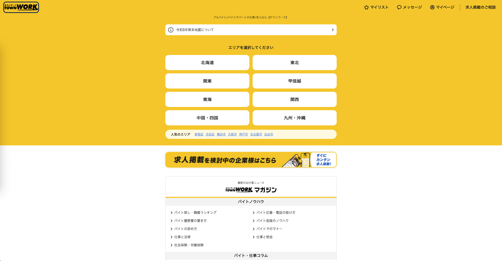
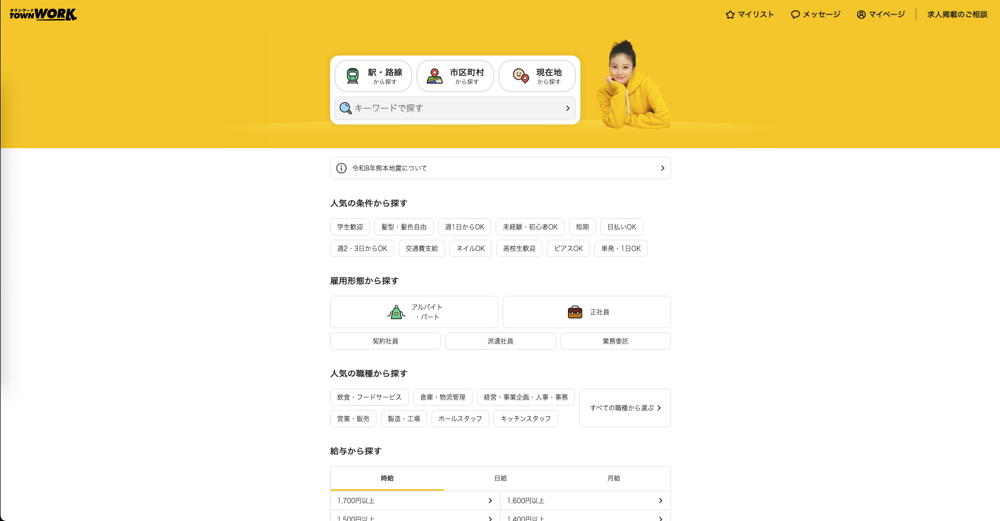

作品一覧へ戻る
タウンワーク フロントエンドリニューアル
株式会社リクルートが運営する国内最大級のアルバイト・パート求人情報サービス。毎週約90万件の求人情報を扱う既存フロントエンド基盤を Next.js（React）へ移行するリニューアルプロジェクトに参画。


概要
株式会社リクルートが運営する国内最大級のアルバイト・パート求人情報サービス。毎週約90万件の求人情報を扱うサービスの既存フロントエンド基盤を、Next.js（React）へ移行するリニューアルプロジェクトに12名体制で参画しました。
技術的課題
- 既存フロントエンド基盤の技術的負債（機能追加・UI改修のスピード・保守性）
- 求人検索・応募導線・マイページ等の画面数の多さに伴うSSR対応・パフォーマンス最適化
- PC・スマートフォン両デバイスでの最適な表示・操作体験
- Google Maps API・LINE連携・SSO認証等の外部サービス統合の整合性確保
主な担当
- Next.js（React）によるフロントエンドリニューアル（SSR活用、初期表示速度・SEO最適化）
- 求人検索・詳細画面のUI/UX改善（コンポーネント設計）
- PC/SP判定によるデバイス最適化ロジックの実装
- Google Maps API・LINE連携・SSO認証・履歴書管理・ポイント機能等の外部サービス連携移行
- AWS RUM（Real User Monitoring）の導入・運用
- Google Tag Manager・Google Analyticsによる分析基盤整備
成果
- Next.js移行によりSSRでの初期表示速度向上・SEO最適化を実現
- コンポーネント設計見直しにより開発効率・保守性が向上